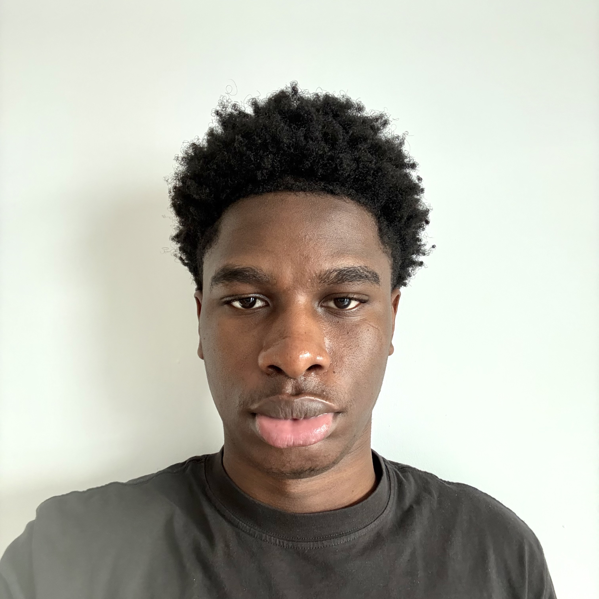

|
Orly Kahasha Mulungulungu
I'm a first-year student in Information Technology at
York University in Toronto, Canada.
Alongside my studies, I am an e-commerce entrepreneur — I run multiple
online brands, lead media buying and paid advertising campaigns, and
operate my own e-commerce agency.
I graduated from EIB le Cartésien in Kinshasa, Democratic
Republic of Congo in July 2024 before moving to Canada to pursue my degree.
Outside of business and academics, I am passionate about football (soccer)
and boxing.
Email /
Instagram
|

|
|
2026 – Present
|
Bachelor of Information Technology
York University — Toronto, Ontario, Canada
First-year student exploring the intersections of technology, business, and digital systems.
|
|
Graduated July 2024
|
High School Diploma
EIB le Cartésien — Kinshasa, Democratic Republic of Congo
Completed secondary education before relocating to Canada to pursue university studies.
|
Projects & Experience
My work sits at the intersection of digital marketing, technology, and entrepreneurship.
I build and scale e-commerce brands through data-driven advertising and strong brand positioning.
|
E-Commerce
& Media Buying
|
Founder & Media Buyer — E-Commerce Agency
2023 – Present
I own and operate an e-commerce agency focused on launching and scaling
direct-to-consumer brands across multiple niches. My work includes building
product pages, running paid advertising campaigns (Meta Ads), developing
creative strategies, and managing full-funnel customer acquisition. I have
scaled brands from zero to generating consistent revenue through performance
marketing.
|
|
Sports
|
Football (Soccer) & Boxing
Personal Pursuits
I am an active football player and boxer. Both sports have shaped my
discipline, competitive mindset, and ability to perform under pressure —
qualities I carry into everything I do professionally and academically.
|
|
{kind=link}